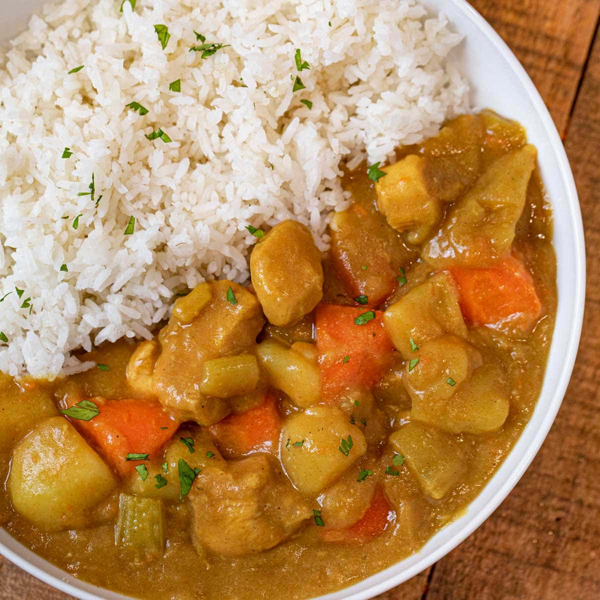

Japanese Curry

Description
A curry that has a thick stew-like consistency with a rich savory taste originating from Japan.
Ingredients
- 2 onions
- 2 carrots
- 3 yukon gold potatoes
- 1 tsp ginger
- 2 cloves garlic
- 1/2 apple
- 1.5 lb chicken thighs
- 4 cups water
- 1 package curry roux
Steps to cook
- Prep ingredients by washing and chopping
- Put oil into pot and saute the onions
- Add minced garlic after cooking onion for 5 minutes
- Add chicken to cook
- Add 4 cups of water
- Add roux ingredients
- Simmer covered on medium-low heat for 15 minutes
- Add roux cubes and simmer until curry thickens
- Serve with white rice